Drone Photogrammetry
In short: drone photogrammetry turns overlapping aerial photos, tied to DGPS ground control points, into measurable maps. Our in-house GIS team delivers orthomosaics, DSMs, DTMs, contours and point clouds for highway, railway, mining, urban and environmental projects. Accuracy depends on ground sample distance and control (see our accuracy guide and GSD calculator).
At DATA PKT Infra & Geomatics, we help with the following photogrammetry steps:
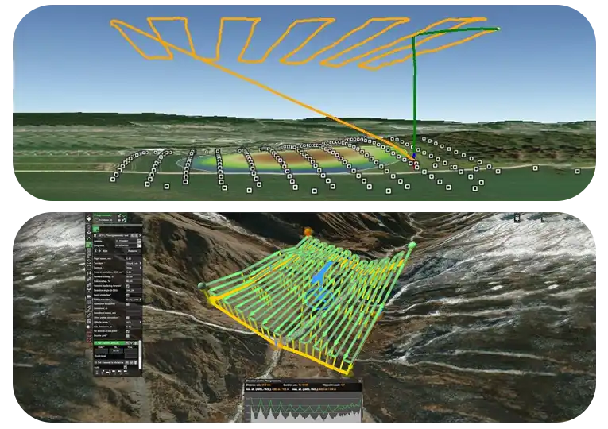
Data Acquisition
Planning and Preparation
- Define project objectives and requirements.
- Identify survey area and assess potential obstacles.
- Determine optimal flight path and altitude.
- Ensure 80% image overlap for accurate orthophoto creation.
- Check weather conditions and obtain necessary permits.
Equipment Setup
- Ensure drone and camera are in good working condition.
- Calibrate drone sensors and cameras.
- Install and configure additional hardware (e.g., GPS).
Camera Model Optimization
Camera calibration calculates camera specifications using photos of a 3D object with a geometrical pattern (e.g., checkerboard). Calibration types include Full, Field, Self, and Auto.
- Full calibration sets up a specific camera calibration project.
- Field calibration optimizes the camera during normal project processing.
- Self-calibration adjusts camera parameters for each photo individually.
- Auto calibration integrates with Smart Orientation for field calibration.
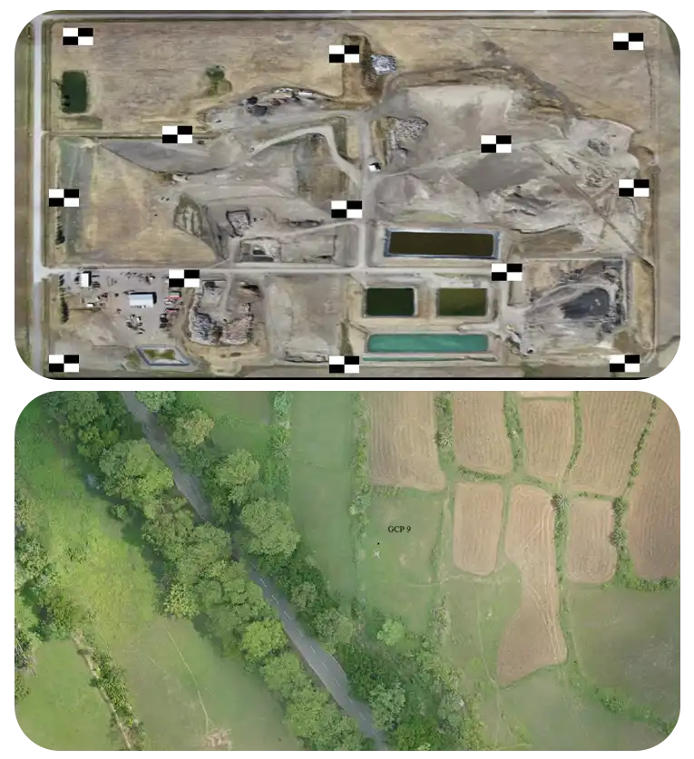
GCP (Ground control points)
Ground control points (GCPs) are marked points on the ground with surveyed coordinates. Because each one can be located precisely in the aerial images, a few GCPs are enough to tie a large survey area to real-world coordinates.
Any feature that is clearly visible in the photos can serve as a GCP. Most are checkerboard-style targets, because the pattern leaves no doubt about the exact centre of the point.
Is it always necessary to use GCP?
Not always. If the drone does not have RTK or PPK, we always use GCPs. With an RTK or PPK drone, GCPs add little to accuracy but still serve as independent accuracy checks. Without GCPs a survey can still give a usable model, but it may lack correct scale, orientation or absolute position.
GCPs have long been standard in aerial mapping, though RTK and PPK drones are changing how many are needed.
GCPs and RTK or PPK geotags allow the result to be checked for accuracy.
The difference between GCP, Automatic and Manual tie points
GCP coordinates are fixed on the ground with instruments such as DGPS and total stations.
Automatic tie points are features that the software detects in several overlapping photos. They are used to stitch the images together.
Any immediately identifiable place that appears in several photos, such as the corner of a building or a road, can be used as a manual tie point.
Manual tie points can assist in enhancing a project's relative accuracy, but they can't help with absolute precision because their location in space isn't known.
Flight Execution
- Conduct a pre-flight check to verify all systems are functioning correctly.
- Launch the drone and follow the planned flight path, adjusting altitude and camera settings as needed.
- Capture overlapping aerial images with sufficient ground coverage and detail.
- Maintain communication and monitor the drone's position and battery life throughout the flight.
- Ensure the drone returns to the home point or a safe landing location with ample battery reserve.
- Post-flight inspection to assess drone condition and review any captured data for quality.
- Transfer and back up all aerial images and data to a secure storage location.
- Analyze the captured images to create a detailed map or 3D model of the surveyed area.
- Download and back up all captured images and flight data immediately after landing.
- Regularly check the weather conditions and adjust the flight plan if necessary.
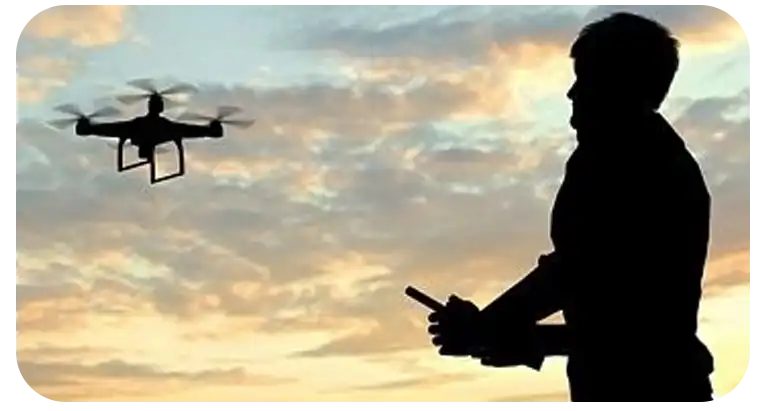
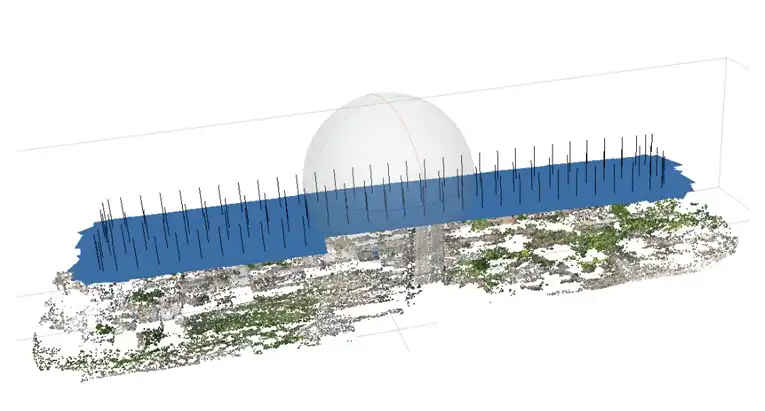
Data Processing
- Transfer the captured imagery to a computer or processing device.
- Use specialized photogrammetry software to stitch together the individual images into a cohesive mosaic.
- Apply algorithms to triangulate image features and generate a dense point cloud representing the surveyed area.
- Generate orthomosaics, digital surface models (DSMs), and other derived products from the processed data.
- Validate the accuracy of the generated models by comparing them with ground control points (GCPs) or known reference data.
- Perform quality checks on the orthomosaics and DSMs to identify and correct any artifacts or inconsistencies.
- Export the processed data into various formats suitable for different applications and software platforms.
- Integrate the geospatial data with GIS software for further analysis and visualization.

Data Quality Control and Analysis
- Validate the accuracy and completeness of the generated 3D models and maps.
- Conduct any necessary adjustments or corrections to improve the quality of the data.
- Perform measurements, analysis, and interpretation of the photogrammetric outputs to extract relevant information.
- Share the validated models and maps with stakeholders for feedback and further insights.
- Use the extracted measurements to inform project design and planning decisions.
- Document the methodologies and workflows used in the photogrammetric process for reproducibility and future reference.
- Train client teams to use the photogrammetry outputs.
- Keep processing methods and software up to date to improve quality and turnaround.
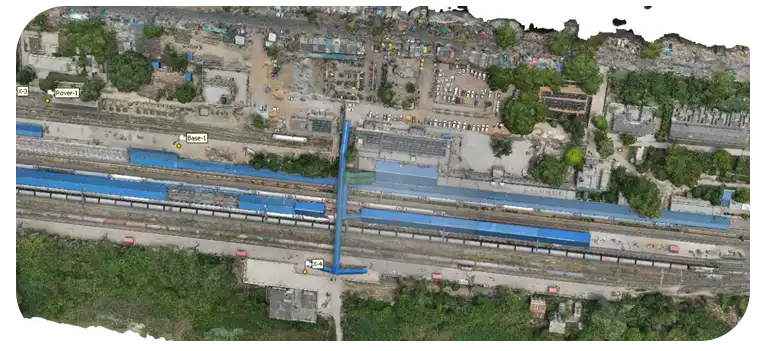
Deliverables
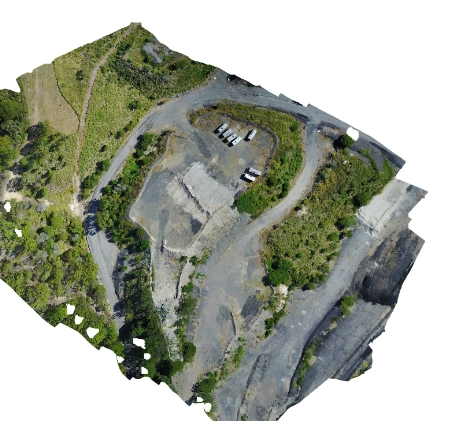
Orthomosaic map
Drone photographs are corrected for distortion and merged into an orthomosaic map. Each pixel carries 2D geographic coordinates (X, Y), so horizontal distances and areas can be measured directly from the map.
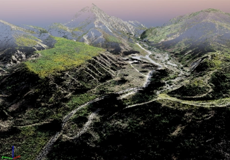
3D Point Cloud
Drone images are processed into dense point clouds in which every point has coordinates (X, Y, Z) and colour. They allow horizontal and vertical distances, areas and volumes to be measured.
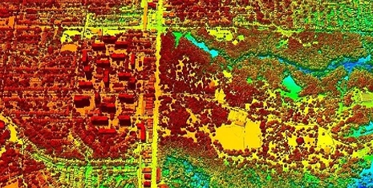
DSM
A DSM (Digital Surface Model) represents the ground together with everything on it, such as buildings and vegetation. In a DSM built from drone images, each pixel holds its position (X, Y) and the elevation (Z) of the highest point at that location.
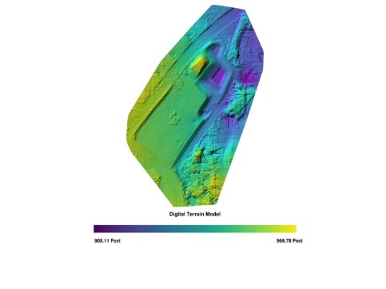
DTM
A DTM (Digital Terrain Model) represents the bare ground, with buildings and vegetation removed. It is produced from low-altitude imagery taken with a geometrically calibrated camera, and each pixel stores X, Y and the ground elevation (Z).
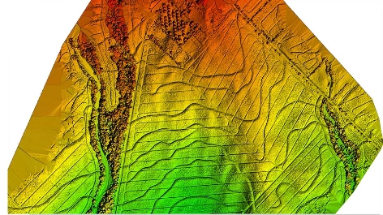
Contour map
Contour maps are generated from the DTM or DSM at the interval the project requires, showing the shape of the ground across the surveyed area. See how to choose the interval in our guide to topographic and contour survey by drone.
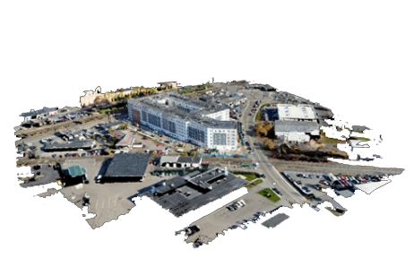
3D Textured Mash
A 3D textured mesh built from drone imagery shows the site's surfaces, walls and edges in detail, giving a complete view of the area for analysis and project planning.
Our Features

Fast Data Delivery
Our in-house GIS team processes drone survey data quickly, so deliverables reach clients on schedule.
Survey-Grade Accuracy
Every survey is tied to DGPS ground control points, so measurements and volumes can be relied on.

Team of Experts
Our GIS engineers, drone pilots and software engineers handle each project from flight to final deliverable.
Advanced Equipment
Drones and sensors are chosen to suit each survey: camera, LiDAR, thermal or multispectral.
Frequently asked questions
What is drone photogrammetry?
Photogrammetry builds maps and 3D models from many overlapping aerial photos. Processing software matches points across the photos to produce an orthomosaic, a surface model and a 3D mesh.
How accurate is drone photogrammetry?
With RTK or PPK positioning and well-placed ground control points, drone photogrammetry typically reaches a few centimetres of accuracy. The ground sample distance (GSD), which depends on camera and flying height, sets the level of detail.
What is a ground control point (GCP)?
A GCP is a marked point on the ground whose coordinates are measured with DGPS. GCPs tie the drone map to real-world coordinates, and independent checkpoints are used to prove the final accuracy.
What file formats will I receive?
Usually GeoTIFF orthomosaics and elevation models, contours and features in DWG or DXF, GIS layers as shapefiles or GeoPackage, and point clouds in LAS or LAZ.